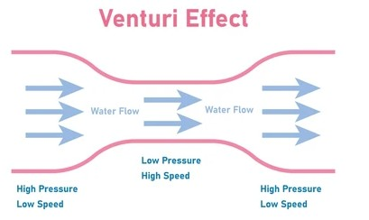
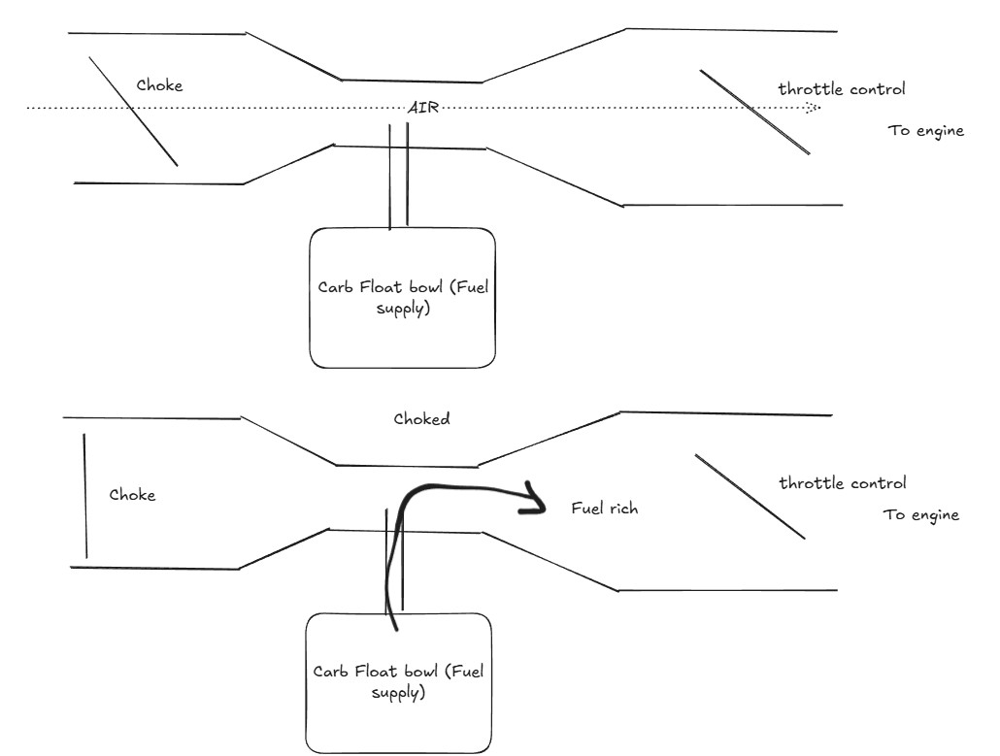
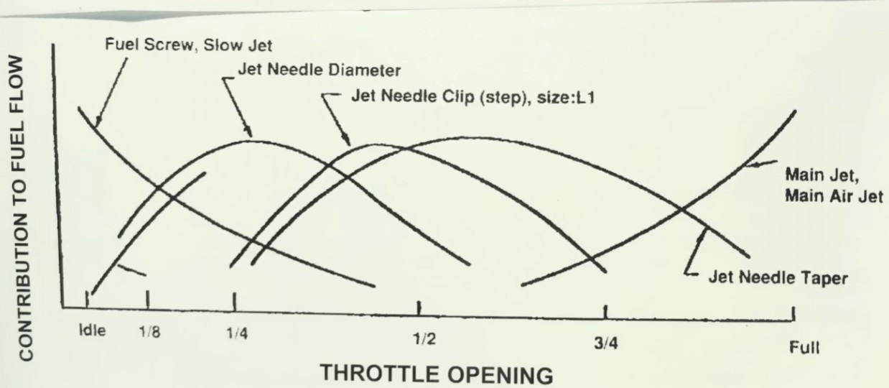

Background
Two years ago I purchased an old Honda 750 rescued from a barn in Oslo. Although it was a lot older than myself — being made in 1981 — it was in surprisingly pristine condition. The only issue was that it require a lot of effort to get started, I sustepected the issue might be the result of a set of clogged carborators.
This being my very first carb rebuild, I figured I'd document everything as I went, partly to stay organised, partly because I knew I'd never remember how it all went back together. I chose the winter months to start the project since the bike was already in storage and it gave me the time to disassemble it properly without rushing.
How a Carburetor Works
Before disassembling the carburetor, I needed to understand what I was actually working on. It made everything else a lot easier.
As a fluid runs through a pipe and the diameter of that pipe suddenly decreases, the velocity of the fluid must increase in order to maintain the same mass flow rate. This increase in velocity causes a drop in static pressure at that point — this is the Venturi effect. Carburetors use this drop in pressure to pull fuel up from the float bowl and into the air flowing into the engine. The airflow itself is driven by the suction stroke of the pistons.

The Venturi effect
There were two control cables on the outside of the carb. One connects to the choke and the other to the throttle. From what I read, the choke works by closing a butterfly valve at the front of the carb, restricting incoming air, and the suction stroke then pulls a fuel-rich mixture into the engine, which is useful for cold starts. The throttle works by opening a butterfly valve at the engine-side of the carb, letting the engine draw in the full air-fuel mixture.

The choke
The tricky part is that the carburetor has to keep the air-fuel ratio correct across all engine conditions with a single fuel source. The engine's demand changes drastically with throttle:
- Idle — very low airflow, high vacuum near the throttle plate
- Mid throttle — moderate airflow, vacuum shifts to the venturi
- Full throttle — high airflow, lower vacuum but large volume
To handle these different operating conditions, the carburetor has separate fuel circuits that come into play at different throttle positions. The pilot jet (also called the slow-speed jet) handles idle and low throttle. The needle jet takes over through the mid-range, with a tapered needle rising inside it as the slide opens. The main jet handles full throttle. Together they give the engine a smooth, continuous fuel supply across the entire rev range.

The fuel circuits
Removing the Carburetor from the Bike
With at least a rough idea of what I was looking at, I could finally start taking things apart.
The first step was to close the fuel tap on the tank, then loosen the drain screw at the bottom of the float bowls to empty any remaining fuel from the carbs. After that, I disconnected the throttle cable and the choke cable from their respective attachment points on the carb. Both of the fuel lines and any vacuum lines were removed next.
With the lines off, I loosened the clamps on both sides of the carb — the intake manifold side and the airbox side. On the CB750, however, the carb cannot actually be pulled out without removing the airbox first. The airbox takes up too much room.
Removing the Airbox
To get the airbox out, I first unscrewed the regulator-rectifier, which freed up just enough space to access the airbox mounting screws. Once those were out, the airbox could be lifted clear of the frame.
With the airbox gone, I was able to rock the carb back and forth to work it free from the rubber intake manifold hoses and slide it out of the bike.
Splitting the Carbs
The CB750 runs a bank of four carburetors held together by a front and rear rail. Before splitting them I removed the fuel distribution block — the brass fitting where the main fuel line connects.
I unscrewed the top rail first, followed by the bottom rail. Some of those screws were well and truly stuck — I ended up using vice grips on a couple of them to get them moving. Once both rails were off, the bank was still held together by a small spring between carbs 2 and 3 that synchronises the choke shafts across the two halves. I carefully unhooked that spring from the hook on the carb 3/4 choke shaft, letting it unwind slowly, then split the bank into a 1&2 pair and a 3&4 pair.
I also noticed there are two tubes running between the carbs: the fuel rail tube (the larger of the two) and the accelerator pump tube. The accelerator pump is a small spring-loaded diaphragm with check valves that squirts extra fuel into the carb throat when the throttle is opened quickly, preventing hesitation.
Removing the Choke Plates
The choke plates sit towards the air intake side of each carb, mounted on the choke shaft. To access the four mounting screws on each plate I had to rotate the shaft to bring the screws to a reachable angle, then unscrew them carefully with a well-matched Phillips driver. Once all the plate screws were out, the choke shaft could be slid out.
With the choke plates out, I was able to fully separate the individual carbs. I was careful to keep track of the small throttle spring sitting between the paired carbs, along with the fuel tubes and accelerator pump tubes.
Taking Apart Individual Carbs
Bottom End
The bottom end — the float bowls — was the more straightforward of the two ends to remove, so I started there.
I began by removing the drain screws at the very bottom of each bowl, then the three 4mm screws holding the bowl onto the carb body. Inside each bowl I found the plastic float, the jets, and a rubber passage plug.
The plastic float maintains a constant fuel level inside the bowl at all times. Any damage to the float or float valve here can result in fuel overflowing once the carb is back on the bike, so handle them carefully. I set each float and its valve aside together — they are matched to each other and should stay that way.
Next I removed the primary main jet, then the secondary main jet and its emulsion tube. The silver needle jet is held in place by the secondary main jet emulsion tube .
Finally, I removed the pilot screws by turning them counter-clockwise. Each pilot screw has a small spring, a flat washer, and an O-ring sitting underneath it in the bore . The old O-rings were discarded.
Air Cutoffs
Each carb has a small cover on the side held by two screws — underneath sits a strong spring and a rubber diaphragm. This is the air cutoff mechanism, which closes off the air supply to the engine when the throttle is closed suddenly, preventing a rich backfire. The diaphragm and spring work together to create a vacuum seal that cuts off the air when the throttle snaps shut.
The diaphragm needs to be inspected carefully. I held each one up to a light source to check for any cracks, thin spots, or perforations. A compromised diaphragm will cause the bike to pop and backfire on deceleration.
Top End
The top end was trickier to remove, mainly because of a set of stubborn screws. I eventually needed vice grips to get them moving without rounding them off. Once the two 4mm screws were out, the top cap comes apart without much fuss.
Inside there is a spring and a vacuum slide — referred to as the "puck" in most guides. When the throttle opens, vacuum in the carb pulls the slide upward, lifting the tapered needle inside the needle jet and allowing more fuel to be delivered. The puck and spring work together to control this movement and keep fuel delivery smooth. If the puck is missing, cracked, or badly worn you will get jerky throttle response and inconsistent fuelling.
There is also a small kidney-shaped plastic air jet cover and a plastic seal ring around the inner tube of the top cap. Both came out with the cap and went into the parts tray.
Cleaning
Carb Body and Big Parts
Once all the parts were removed I placed the carb bodies and caps into the ultrasonic cleaner. Each part took around 40 minutes on the pulsed setting. The result was a set of spotless carb parts — everything came out looking new. I gave them a light polish with some fine steel wool and paper towels to finish up.
After the ultrasonic clean, I sprayed carb cleaner into each passage in the body — the primary main air jet, secondary main air jet, slow air jets, air cutoff feed, air bypass, float valve seat, and pilot screw bore. Make sure the spray runs clear and unobstructed through each one. Any blockage here will cause running problems that are very difficult to diagnose later.
The inside of the top cap also needs attention. Any residue inside the center tube will impede the puck's movement and affect throttle response. I stuffed a piece of paper towel down the tube and worked it clean, then sprayed through the small hole on the side of the inner tube to verify it was clear.
Slow Speed Jets
The slow speed jets are the most important jets to get clean. A partially blocked slow jet is the most common cause of a carburetor that runs poorly at idle and low throttle, yet seems fine once you are moving.
I started by pushing a guitar E-string down through the center tube of the carb — the E-string is the perfect diameter for this. I pushed it down around 40mm to be sure I had cleared the jet, twisting it gently as I went rather than forcing it straight down.
Once cleared with the E-string, I wrapped enough electrical tape around the tip of the carb cleaner straw to make it fit snugly inside the slow-speed jet tube. I held my thumb over the primary main jet hole in the float bowl and my index finger over the lower air cutoff hole, then sprayed. A properly clear slow jet will produce a visible stream or bubbling out of the pilot screw hole. I did not consider the carb clean until I could see that.
Accelerator Pump Nozzles
I also sprayed the accelerator pump nozzles to verify they were clear. Sitting the carb on its front face, I pressed the conical tip of the straw into the accel pump rail hole and watched the pump nozzle while spraying — a clear nozzle will produce a clean stream. The nozzle location varies by carb position in the bank, so check which side the rail hole is on for each.
Small Parts
The small parts — jets, screws, pilot screws, springs — all went through the ultrasonic cleaner for about 30 minutes, then got a spray down with carb cleaner and a light scrub with an brush.
I used a brass brush on each choke shaft to get them clean and shiny.
The accelerator pump cap also has a small check valve in it that needs to be verified clear. Carb cleaner sprayed into the larger of the two holes should come out briskly from all four sides of the square brass insert. If it doesn't, soak it longer and run it through the ultrasonic again.
Things Worth Inspecting Before Reassembly
Float test: I pushed each plactic float under a cup of water for around 10 minutes. Afterwards I held each float near my ear and shoke it. Any sloshing means fuel has leaked inside and the float needs replacing — it will no longer maintain the correct fuel level.
Float valve seats: A quick search on youtube regarding carb issues turns up multiple results with people complaining that fuel was overflowing from their carb. The float valve seats are the second most important thing to get right after the slow-speed jets. Dirty or pitted seats are the most common cause of fuel weeping from the overflow tubes. I polished each seat with a Q-tip and some metal polish until they were bright, paying close attention to the area around the fuel entrance hole.
Jet markings: Check that all four primary main jets have matching numbers, and all four secondary main jets match each other. On the CB750 the stock jetting is K68 for the primaries and K100 or K102 for the secondaries. It is very common for previous owners to have mixed up primaries and secondaries during an earlier rebuild. Keeping the secondary jet installed in its emulsion tube when you remove it prevents this mix-up from happening.
Pilot screws: Check the tapered tip of each pilot screw under a magnifying glass. The tip should be smooth and undamaged. A bent or grooved tip will prevent proper fuel metering and no amount of adjustment will fix it.
Assembling Individual Carbs
Assembly follows the reverse of disassembly with a few things worth calling out.
I started with the top end. The air jet cover goes in first, snugged but not over-tightened. The seal ring follows with its inner lip facing upward, then the vacuum puck drops down into the carb. As the puck goes in, its groove needs to engage the tab on the air jet cover. I looked through the rear of the carb while lowering it to make sure the needle also lined up with the needle jet below. The spring goes over the puck and the top cap goes on, making sure the spring seats around the outside of the brass center tube of the cap. Two 5mm screws hold the cap in place. These were replaced with Hex Screws.
For the bottom end, I started by installing the primary main jet emulsion tube, then the primary main jet. I checked that the silver needle jet was sitting in the center of the carb throat.
Pilot screws: I slid the spring onto the pilot screw, followed by the flat washer, then a new O-ring. The assembly screws into the body clockwise until it gently bottoms out . Do not force it past this point, as the thin neck below the threads is easy to snap. From fully seated I backed the pilot screw out 3 full turns for the CB750. This is the baseline starting point; fine-tuning happens later on the running bike.
Right before closing up each carb I poured a small amount of water into the float bowl and checked for any leaks. Once satisfied there were none, I installed the float bowl with a fresh gasket. I gently stretched the gasket through my fingers a few times to get it to seat properly in the groove without needing any sealant. The three 4mm screws were tightened evenly, and the bowl drain screws went back in with fresh O-rings.
Air cutoffs: The O-ring seats in the carb body with its flat side against the body. The diaphragm goes in first, then the spring with its small end facing outward, and finally the cover.The small nub on the inside of the cover should locate into the small end of the spring. I snugged the two screws down evenly, double-checking that the diaphragm was still fully seated in its groove and the O-ring hadn't shifted.
Banking the Carbs Back Together
Assembling the four carbs back into a bank was by far the most involved part of the whole job.
I started with carbs 3 and 4. The fuel rail tube and accelerator pump tube were inserted into carb 3, then I brought carb 4 up to meet them, twisting the tubes gently as I pressed the carbs together to seat the O-rings properly. The sync tab from carb 4 needs to sit on top of the sync tab from carb 3 — this is important for correct bench syncing later. The choke shaft for the 3/4 pair slid in from the carb 3 side, and I installed the choke plates onto the shaft reliefs, leaving the screws about one full turn loose for now.
Carbs 1 and 2 followed the same process, but required a bit more patience to get the choke shaft and its spring set up correctly. The spring has two hooks — one vertical and one horizontal. The horizontal hook needs to engage the choke actuating mechanism on carb 2 as the shaft slides in, while the vertical hook will be used later to connect the two halves together. I used a bent paper clip to wind the spring and position the vertical hook onto the choke shaft tab, ready to receive the 3/4 bank. The sync tab from carb 1 should sit on top of carb 2's sync tab.
The vertical hook of the spring needs to stay on its perch on the choke shaft tab while the tines from the 3/4 choke shaft come up to meet it. I loosely inserted the vent tube, fuel tube, and accelerator pump tube from the 3/4 side into their ports on carb 2, then carefully guided the tine of the 3/4 shaft onto the spring hook using the paper clip. The sync tab from carb 3 must sit on top of carb 2's sync tab. Once everything was aligned, I pressed the two halves firmly together and twisted the tubes to seat the O-rings.
Bench Syncing
With the bank assembled, I installed the front and rear rails with all screws finger-tight only, then placed the bank face-down on a flat surface to align all the carb faces flat before tightening anything. With the choke closed I tightened the top rail screws following the sequence in the Honda service manual, checking the choke mechanism after each tightening pass. Once the top rail was done I repeated the process for the front rail.
For the final bits I replaced the mounting screws on the top rail with hex bolt replacements to make future access easier. I applied a small dab of blue Loctite to each choke plate screw before final tightening. A loose choke plate screw that gets sucked into the intake will cause serious engine damage.
The sync screws were installed between carbs 1/2, 4/3, and 3/2. I installed them slowly and without any force; if a screw meets resistance going in.
For bench syncing, I wedged the throttle fully open and adjusted each sync screw so that carbs 1, 3, and 4 matched the butterfly opening of carb 2 as closely as I could eyeball it (carb 2 is the reference carb and is not adjusted). I then let the throttle close and set the high-idle knob so all four butterflies were just covering the front-most small hole at the base of the carb throat. I cycled the throttle several times to make sure everything snapped back to the same position each time, then snugged down the sync screw locknuts.
Installing Back into the Bike
Getting the carb back into the bike followed the same process as removal in reverse. I rocked the carb back and forth onto the intake manifold hoses first, then worked the airbox-side hoses on. Both sets of hose clamps were tightened once everything was seated. The throttle cable and choke cable went back to their respective attachment points and the fuel lines were reconnected.
Tuning on the Bike
Much to my surprise (and relief), the engine fired up on the first attempt. The carbs seemed to be working well straight away, but I still needed to verify the air-fuel mixture was correct. This is done by adjusting the pilot screw on each carb individually.
With the engine fully warm and at idle, I turned a pilot screw inward (lean) until the idle speed dropped noticeably, then backed it out slowly until the idle speed peaked. From that point I continued outward another quarter turn to land on a slightly rich setting, then adjusted the idle speed screw to bring the overall idle back to the target RPM. I repeated this for each of the four carbs, verifying each adjustment with a short ride.
The final check was the spark plugs. After a few short rides I pulled all four plugs and inspected them. A correct air-fuel mixture will leave plugs that are a light tan or grey-brown color — not white (too lean) and not sooty black (too rich). All four came out looking good, which was a satisfying end to a project that had been sitting in the back of my mind for two winters.
I have been thinking of installing a good quality in-line fuel filter between the tank petcock and the carbs.
Timelapse
I put together a timelapse of the whole rebuild from start to finish.